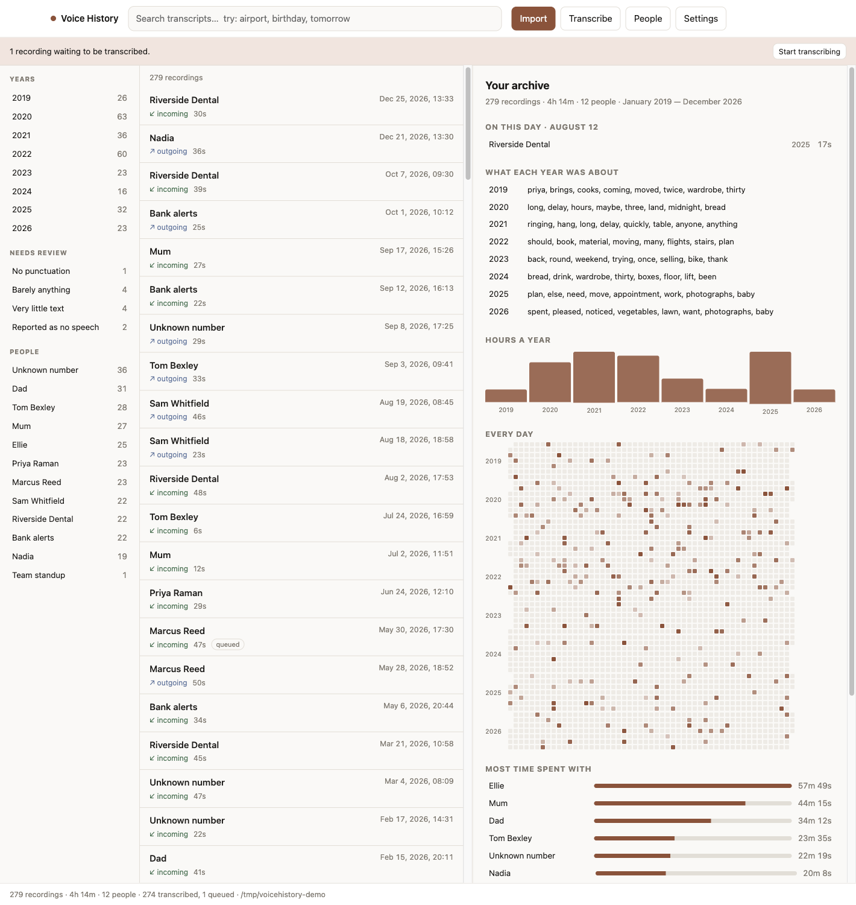
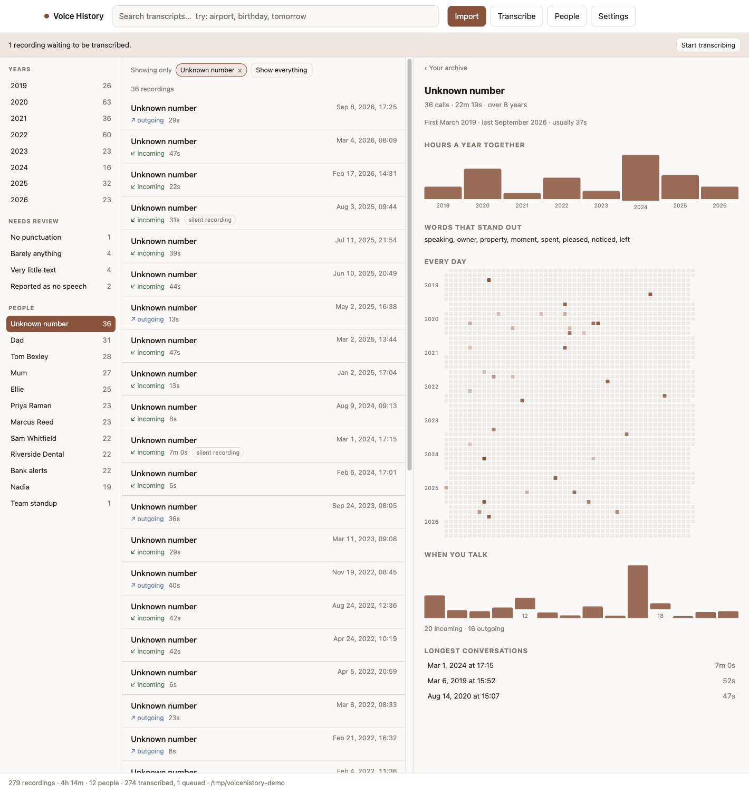
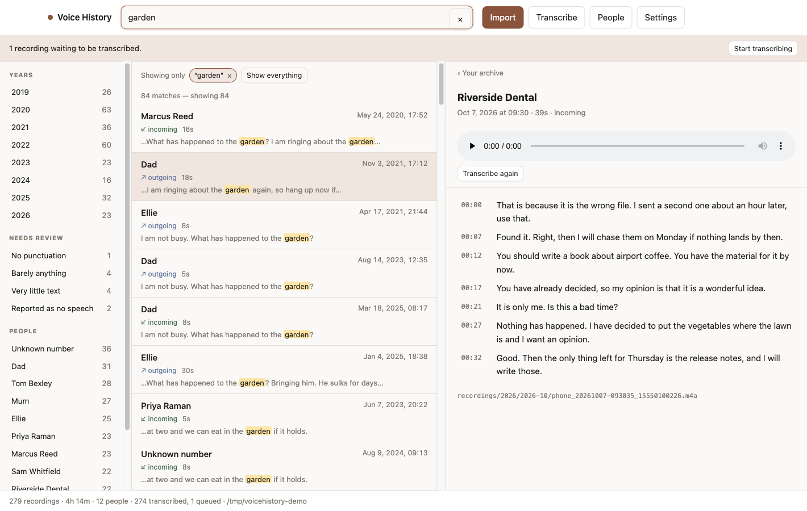
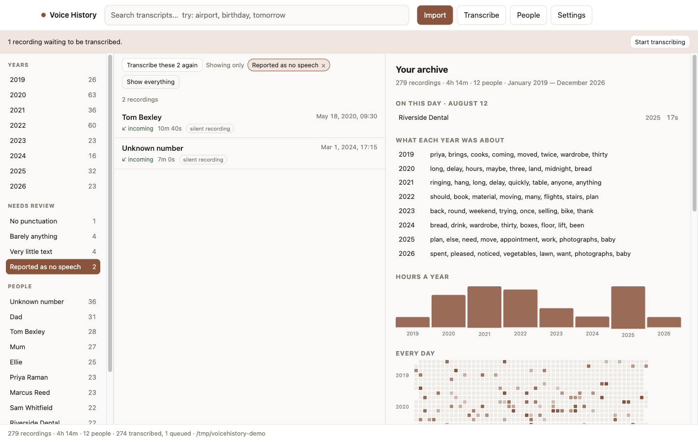
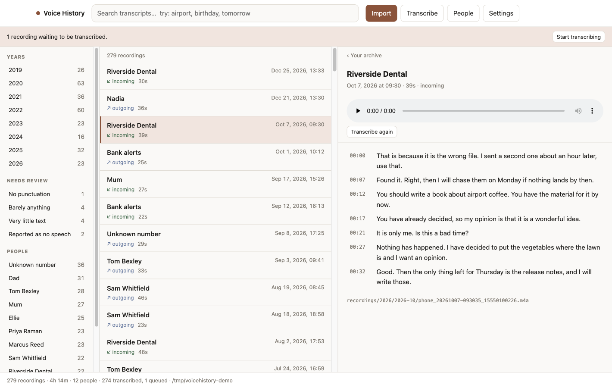

Point it at a folder of call-recorder exports. It files them by date, transcribes the speech on your own machine, and turns the pile into something you can search, read and listen back to.
Nothing leaves your machine macOS · Windows · Linux MIT No account, no server, no cloud
Builds are unsigned, so the first launch needs a nudge: on macOS right-click → Open;
on Windows More info → Run anyway. They expect
ffmpeg and whisper-cli installed — the app checks on
launch and says what to run.

Hours a year, so a quiet stretch is visible as one. Every day as a map, where a pale year is a pale year. Who your time actually went to — ranked by hours, not by number of calls, or a bank's notifications would outrank a parent. And what each year was about, drawn from the transcripts: not the commonest words, which are yes and well in every year alike, but the ones that stand out against everything else recorded.


Speech recognition does not fail loudly. For a recording it made nothing of, it returns one plausible line as readily as a real transcript — a stage direction, or a single phrase for an hour of talking. The archive points at those instead of leaving them to be found by scrolling, and offers to run them again.


Anywhere you like, including an external drive. It holds the recordings, the transcripts and the search index, and nothing else — no copy is kept elsewhere. Move the folder and the archive moves with it. Files are the source of truth and the database is derived from them, so it can be rebuilt from scratch at any time and an indexing bug cannot cost you anything.
<your archive>/
archive.json format version and settings, travelling with the data
recordings/2026/2026-07/ originals, filed by month
audio/2026/2026-07/ playable copies — no browser plays AMR
transcripts/2026/2026-07/ raw model output
contacts.json names you assigned
index.sqlite search index — derived, rebuildablegit clone https://github.com/fedyunin/voicehistory.git
cd voicehistory
npm install
npm run appNode 20+, ffmpeg and whisper.cpp. On macOS:
brew install ffmpeg whisper-cpp. The app downloads the speech model itself.
5,398 recordings, 505 hours, 2019–2026, exported from a phone as 8 kHz AMR. Almost nothing about making that work was predictable from documentation: why the recognizer needs a priming prompt before it will produce punctuation at all, why normalizing audio helps damaged recordings and hurts healthy ones, why silent files have to be detected before transcription rather than after, and why one day with 98 calls ruins a colour scale for the other 1,611.
Engineering notes → every finding, with the measurement behind it.